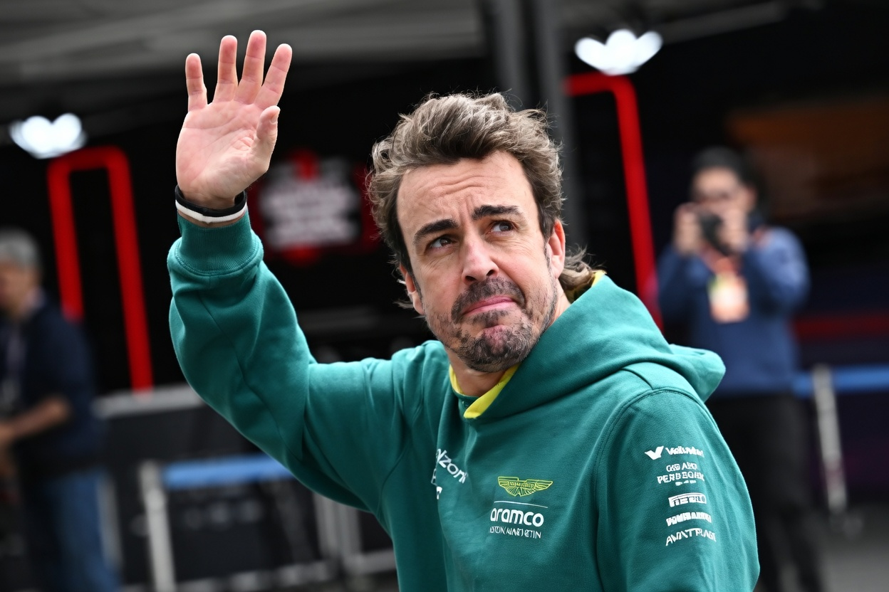

2023 Season Tribute
▶ Watch Fernando Alonso 2023 TributeThe Legend
Fernando Alonso Díaz is widely regarded as one of the greatest and most complete racing drivers of all time. Born on 29 July 1981 in Oviedo, Spain, he showed exceptional talent from a very young age.
Formula 1 Glory
Alonso won the Formula 1 World Championship in 2005 and 2006 with Renault, becoming the youngest champion at the time. He secured 32 Grand Prix victories and 22 pole positions across his long F1 career with teams like Renault, McLaren, Ferrari, and Aston Martin.
Beyond Formula 1
Fernando has excelled in many other disciplines:
- 2018–19 FIA World Endurance Championship (WEC) – Champion with Toyota
- 24 Hours of Le Mans – Winner in 2018 and 2019
- 24 Hours of Daytona – Winner in 2019
- Indianapolis 500 – Competed and led the race as a rookie in 2017
- Dakar Rally – Competed multiple times, best finish 13th overall in 2020
Legacy
With victories in F1, Le Mans, Daytona, and podiums in IndyCar and Dakar, Alonso is one of the few drivers to achieve success across such diverse motorsport categories. His fighting spirit, adaptability, and passion continue to inspire fans worldwide.